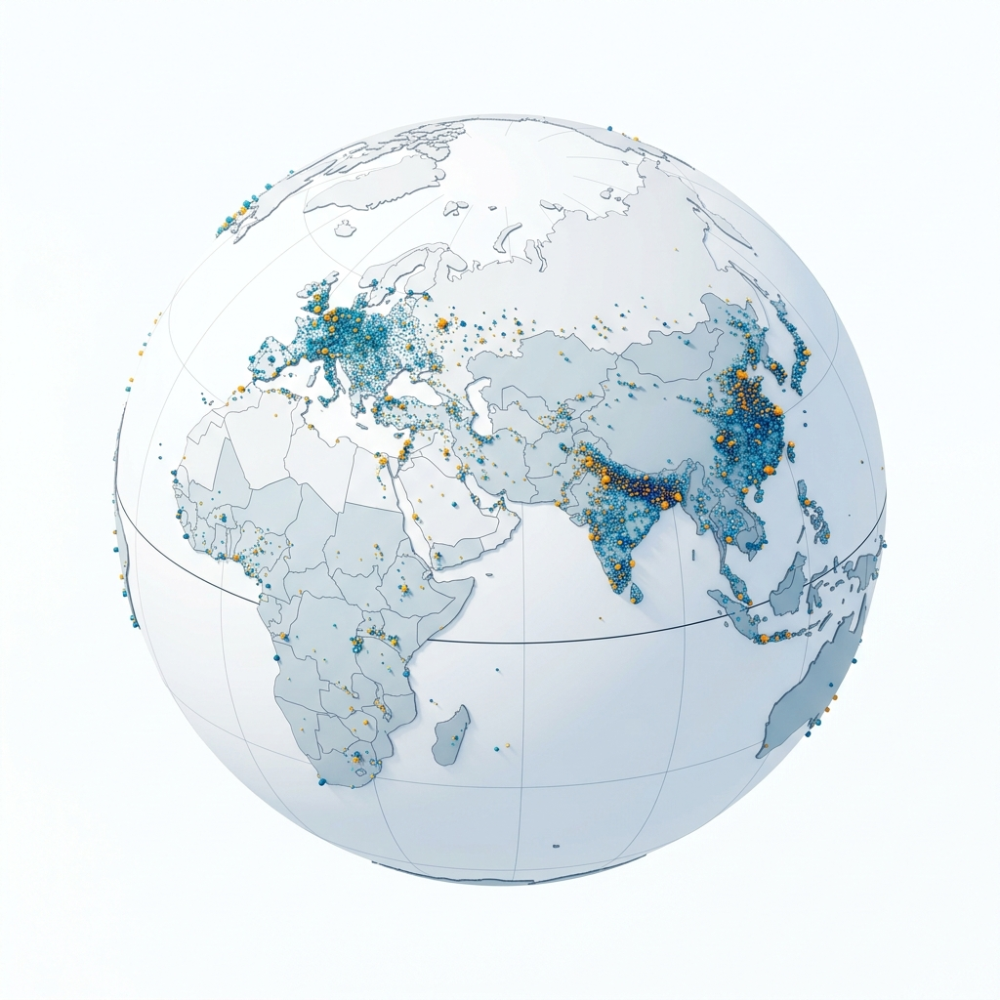
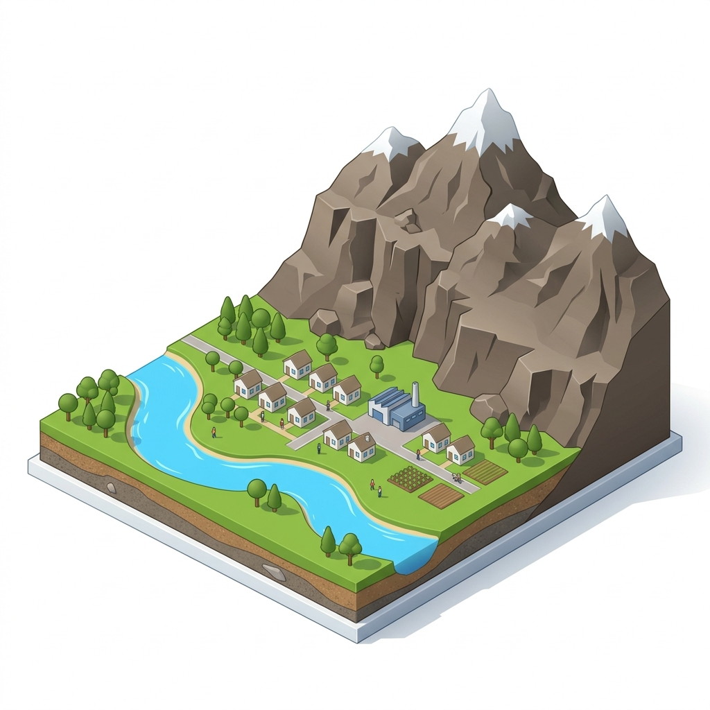
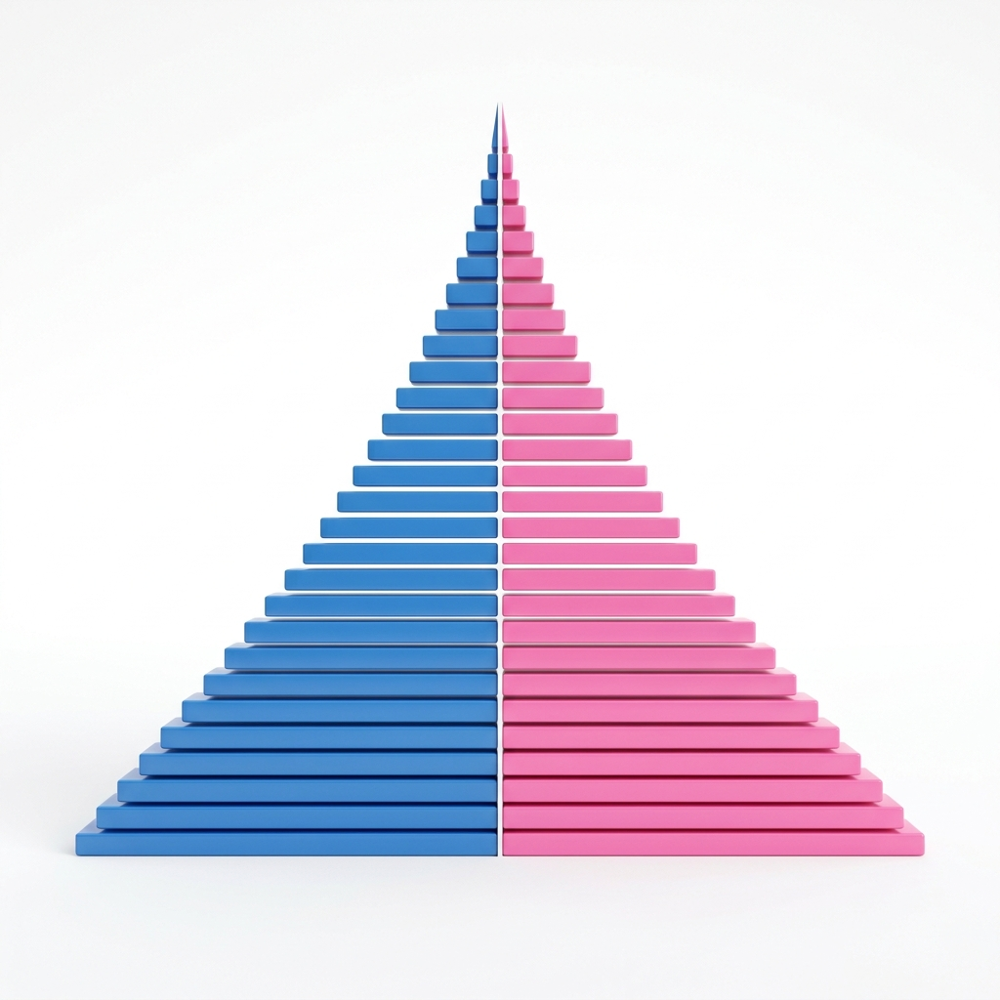

Vardaan Learning Institute
Class 8 Geography • Chapter Notes
🌐 vardaanlearning.com📞 9508841336
Population Dynamics
1. Introduction to Population Dynamics

The total world population is estimated to be around 7.9 billion. However, this population is not evenly distributed across the globe; some regions are extremely crowded, while others are nearly empty.
Concept
Population Distribution: The manner in which people are spread across the continents of the world.
Density of Population: The number of people living in a one square kilometre area of land.
Fact
The average density of population in the world is 61 persons per square km.
Global Population Regions
Based on density, the world is divided into three main regions:
- Densely Populated: Eastern Asia, South/South-East Asia, Western/Central Europe, and East-Central North America. These areas have level land, fertile soils, favorable climates, and good transport networks.
- Moderately Populated: Central USA, Central America, Coastal South America, Deccan Plateau (India), Eastern Europe, etc. Growth here is due to improved irrigation, mining, and new industries.
- Sparsely Populated: Equatorial regions (Amazon, Zaire basins), Ice-capped polar regions (Antarctica, Tundra), high mountains (Himalayas, Rockies), and hot/cold deserts (Sahara, Kalahari). They lack population due to harsh climates and rugged terrains.
2. Overpopulation and Underpopulation
Overpopulation
Overpopulation is a condition where the human population exceeds the carrying capacity of a region (e.g., China, India, Nigeria).
- Causes: High birth rate, low death rate, poverty, illiteracy, and better medical facilities.
- Positive Impact: Abundance of human resources ensuring a regular supply of skilled and unskilled labor.
- Negative Impact: Depletion of natural resources, increased pollution, high cost of living, unemployment, poverty, high crime rate, and poor health/sanitation conditions.
Underpopulation
Underpopulation is a condition where the population is too small to fully utilize the available resources (e.g., Canada, Iceland, Romania).
- Causes: Reduced fertility rate, large-scale emigration, famine, war, and political conflicts.
- Negative Impact: Lack of human resources leading to a severe labor shortage.
- Positive Impact: Abundance of natural resources, low pollution levels, readily available employment (reducing crime), and easily accessible social/infrastructure facilities.
3. Factors Affecting Population

The population of a region is influenced by Physical factors and Economic/Social factors.
Physical Factors
- Topography: Flat plains are densely populated, while rugged mountains are sparsely populated.
- Climatic Conditions: Moderate climates support high populations; extreme climates (deserts/poles) do not.
- Natural Vegetation: Dense, inaccessible forests like the Amazon Basin are largely uninhabited.
- Type of Soil: Fertile river valleys (e.g., Ganga, Nile) are best suited for agriculture and are highly populated.
- Water & Minerals: Settlements grow near freshwater (rivers/lakes) and rich mineral resources (e.g., Gold mines in Australia).
Economic and Social Factors
- Industries: Industrial areas provide employment opportunities, attracting large populations.
- Transport: Regions with good transport networks (coasts, plains) are densely populated.
- Urbanisation: Big cities attract rural migrants in search of better education, healthcare, and higher living standards.
- Government Policies: Political situations and government projects can cause massive population shifts.
4. Growth of Population
Growth refers to the change in the number of population of a particular area between two points of time. It occurs due to natural growth and migration.
Important Formula
Natural Growth Rate = Birth Rate - Death Rate
- Birth rate: Live births per thousand persons in a year.
- Death rate: Deaths per thousand persons in a year.
- Developed Nations: (USA, UK, Japan) have low growth rates due to low birth rates and low death rates (advanced medical care).
- Developing Nations: (India, Kenya, Brazil) have high growth rates due to high birth rates paired with lowering death rates.
Migration
The size of a population is highly affected by movement.
- Emigration: Movement of people out of a country (decreases population).
- Immigration: Movement of people into a country (increases population).
5. Composition of Population

Also known as demographic structure, the composition reveals the characteristics of a population, influencing a country's development.
- Age Composition: Divided into 0-14 years (Children/Dependent), 15-64 years (Adults/Working/Productive), and 65+ years (Aged/Dependent).
- Sex Ratio: The number of females per thousand males. India currently has 1020 females per 1000 males (a favorable ratio).
- Rural-Urban Divide: About 56% of the world is urban. Developed countries have higher urban percentages.
- Literacy Level: High in developed nations; low in underdeveloped nations.
The Population Pyramid
An age-sex pyramid that graphically plots the distribution of males and females across different age groups.
- Broad Base: Indicates a high birth rate (e.g., India, Kenya).
- Narrow Top: Indicates a high death rate and lower life expectancy.
- Broad Center: Indicates a large, economically active middle-aged population (e.g., Japan).